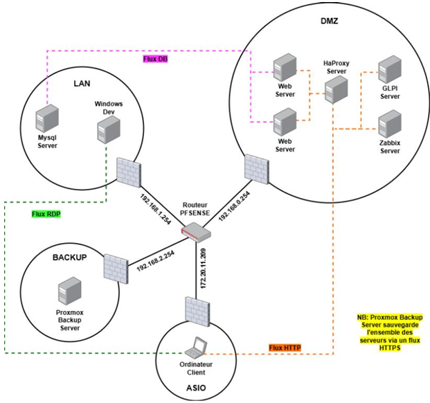

CFA EPFC (AP4)
Contexte du projet
Ce projet a été réalisé pour le CFA Excellence Pro Franche-Comté (représenté par M. Guignan). La demande initiale consistait à remplacer les outils existants disparates de gestion des enquêtes par de nouvelles solutions validant les normes de l'État.
L'objectif principal de notre groupe réseau était de déployer et configurer une infrastructure en Haute Disponibilité (HA) sécurisée, respectant les normes IT publiées par l'ANSSI. Cette infrastructure devait héberger une API Laravel et un panel de gestion développés par nos collègues de la section SLAM.
Contraintes et Ressources
Nous avons dû mener ce projet en respectant un cahier des charges strict :
- Budget nul : L'établissement ne fournissait aucune aide financière, ce qui nous a poussés à installer et utiliser uniquement des solutions open source.
- Ressources fournies : L'infrastructure WAN du lycée et plusieurs ordinateurs faisant office de serveurs physiques (Processeur Intel i7-9700, 32Go RAM DDR4, SSD 500Go) étaient mis à disposition.
- Délai : L'infrastructure devait être intégralement déployée et fonctionnelle pour fin avril 2026 pour un début en Janvier 2026.
👥 L'équipe et la répartition
Ce projet a été réalisé en autonomie au sein du groupe "Réseau". J'ai collaboré avec Landry Doriot (Chef de projet) et Léo Pernin pour gérer l'installation et la configuration de l'infrastructure de A à Z.
Mes missions techniques
Au sein de l'équipe, j'ai pris en charge des aspects précis de l'infrastructure, de la configuration matérielle jusqu'aux services applicatifs :
- Réplication de données (Lsyncd & Rsync) Mise en place d'un protocole de réplication de données web en temps réel avec Lsyncd et Rsync entre les serveurs pour assurer la continuité de service et la sauvegarde des fichiers critiques.
- Système de ticketing (GLPI) Installation et configuration du serveur GLPI au sein de la zone DMZ. J'ai mis en place cet outil uniquement pour sa solution de ticketing, afin que l'équipe de développement puisse faire des demandes spécifiques à notre équipe (besoins logiciels, configurations serveur, etc.).
- Configuration réseau (VLANs) Intervention directe sur le switch physique pour configurer les VLANs, permettant ainsi d'isoler et de sécuriser les différents flux (LAN, DMZ, WAN, BACKUP).
Architecture Réseau et Sécurité
Au vu des données transitant sur le réseau, la sécurité était une priorité. L'architecture a été segmentée en quatre zones distinctes (LAN, WAN, DMZ, BACKUP) routées par un pare-feu pfSense.

Schéma logique de l'infrastructure : Segmentation LAN, DMZ et réseau de sauvegarde
Les prérogatives de sécurité et de maintien en conditions opérationnelles incluaient :
- Un filtrage strict des flux (principe du moindre privilège) sur pfSense, avec uniquement l'ouverture des ports nécessaires (80, 443, 22).
- L'utilisation privilégiée de clés SSH plutôt que de mots de passe pour l'administration.
- La mise en place de HAProxy pour assurer le load balancing et la haute disponibilité des serveurs web.
- Un système de supervision Zabbix pour surveiller la disponibilité des services (HTTP/HTTPS, base de données) et l'état matériel des machines.
- Une politique de sauvegarde quotidienne automatisée vers un Proxmox Backup Server (conservation sur 15 jours).